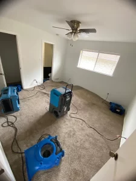
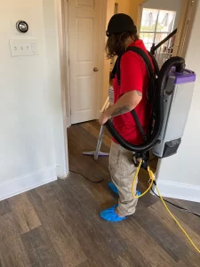

Are you facing the aftermath of a water disaster in Frisco TX?
Intensa
Dry is here to help you regain control and restore your property to its former glory. Our expert
team
specializes in top-notch water damage restoration services, ensuring a swift and thorough recovery
process.


Our Flood Water Damage Repair Services in Frisco TX Include:
- Emergency Response: We're available 24/7 to respond to your water damage
emergencies
promptly.
- Water Extraction: Our team employs advanced water extraction techniques to
remove
standing water from affected areas.
- Drying and Dehumidification: We use industrial-grade drying and dehumidification
equipment to thoroughly dry the affected spaces, preventing mold growth and
structural damage.
- Mold Remediation: If mold has already started to develop, we provide mold
remediation services to safely remove it and prevent its return.
- Content Restoration: We can restore damaged contents, including furniture,
electronics, and personal belongings, to their pre-damage condition whenever
possible.
- Documentation and Insurance Assistance: We help you document the damage for
insurance claims, facilitating a smoother process.
Why Choose Intensa Dry for Water Damage Restoration & Cleanup Services in
Frisco
TX?
- Expertise and Experience: With years of experience in the industry, Intensa Dry
boasts a team of seasoned professionals who understand the complexities of water
damage restoration.
- Swift Response and 24/7 Availability: Time is of the essence when dealing with
water
damage. Intensa Dry offers a rapid response to emergencies, ensuring that help
arrives promptly when you need it most.
- Comprehensive Services: From water extraction and drying to mold remediation and
structural repairs, Intensa Dry provides comprehensive water damage restoration
and
cleanup services.
- State-of-the-Art Equipment: Intensa Dry invests in cutting-edge equipment and
technology to ensure efficient and thorough water damage cleanup and
restoration.
- Customer Satisfaction Guaranteed: At Intensa Dry, customer satisfaction is our
priority. We strive to exceed your expectations at every step of the restoration
process. Our friendly and professional team communicates transparently, keeping
you
informed throughout the cleanup and restoration journey.